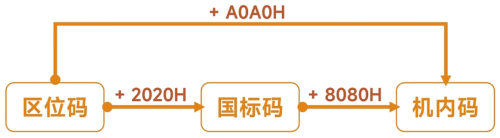

| 7 | 6 | 5 | 4 | 3 | 2 | 1 | 0 |
|---|---|---|---|---|---|---|---|
| 0 | x | x | x | x | x | x | x |
0 ~ 31：共 32 个是控制字符（Control Characters）
32 ~ 126：共 95 个是可打印字符（Printable Characters），包括空格、字母、数字、标点等
127：DEL（删除符），也算控制字符
94个区
每区有94个位
每个区位上只有一个字符
共计：94区*94位，也使用行和列表示
用所在的区和位来对字符进行编码，得到字符的4位区位码，高2位表示区，低2位表示位
使用时，通常需要将区位转换为16进制
区位码是"户口本上的原始编号"
这是最原始的索引，方便查表
| 区号 | 内容 |
|---|---|
| 01-09 | 除汉字外的682个字符 |
| 10-15 | 暂时未启用 |
| 16-55 | 一级汉字，3755个，按拼音排列 |
| 56-87 | 二级汉字，3008个，按部首/壁画排列 |
| 88-94 | 暂时未启用 |
| 01 | 02 | 03 | 04 | 05 | 06 | ... | 94 |
| 02 | |||||||
| 03 | |||||||
| 04 | |||||||
| 05 | |||||||
| ... | |||||||
| 93 | x | ||||||
| 94 |
打印、传真、不同电脑间传文件
但仍未解决与 ASCII 可打印字符的冲突
无法存储

严格来说，GB2312 编码通常指的就是机内码，而国标码是交换码
（1601）10 → （1001）16
（1001）16 + （A0A0）16 = （B0A1）16
| Unicode 范围 | UTF-8字节数 | Unicode 范围 |
|---|---|---|
| U+0000 ~ U+007F | 单字节 | 0xxxxxxx，就是ASCII码 |
| U+0080 ~ U+07FF | 双字节 | 110xxxxx 10xxxxxx |
| U+0800 ~ U+FFFF | 三字节 | 1110xxxxx 10xxxxxx 10xxxxxx |
| U+10000 ~ U+10FFFF | 四字节 | 1110xxxxx 10xxxxxx 10xxxxxx 10xxxxxx |
| item | value |
|---|---|
| 三字节 - 2进制 | 1110 0110 10 0010 00 10 01 0001 |
| 三字节 - 16进制 | E6 88 91 |
区位码 + 2020H = 国标码
国标码 + 8080H = 机内码
区位码 + A0A0H = 机内码